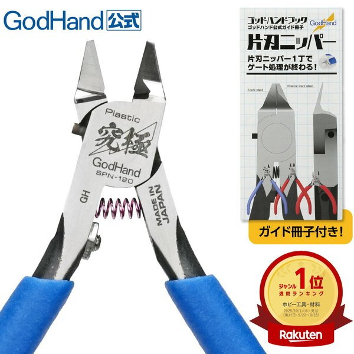
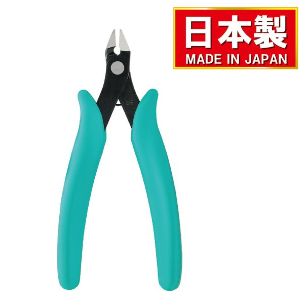
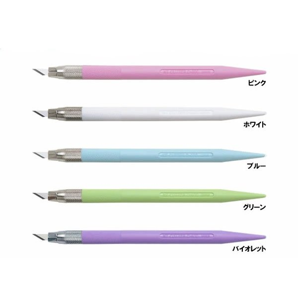
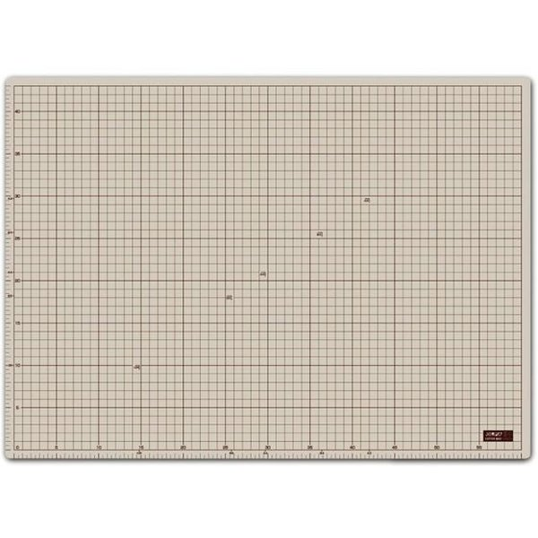
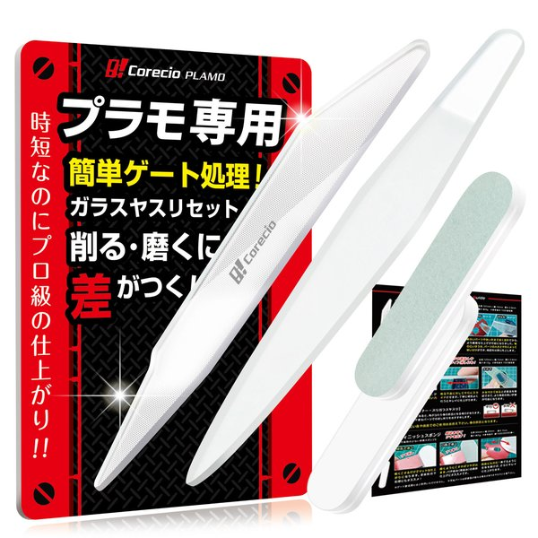
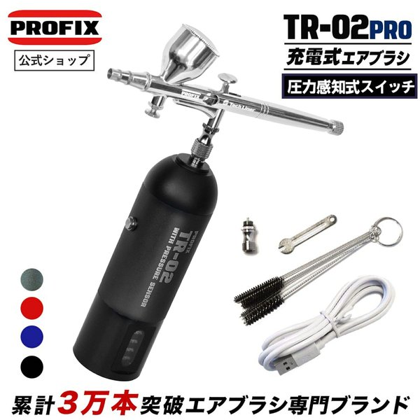
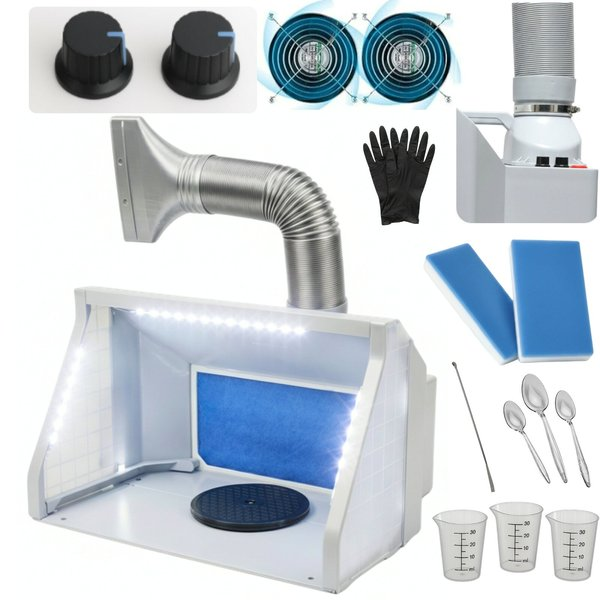
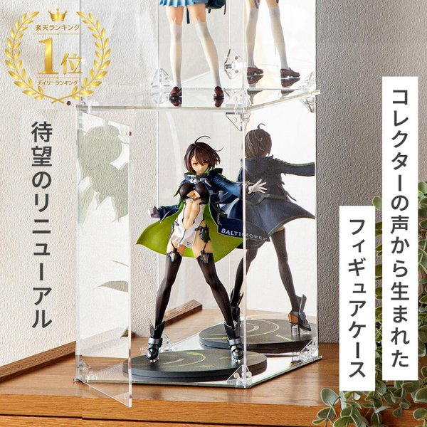
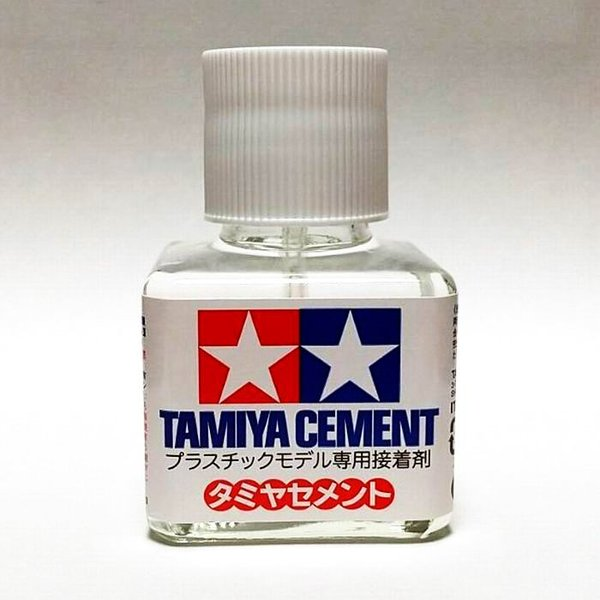
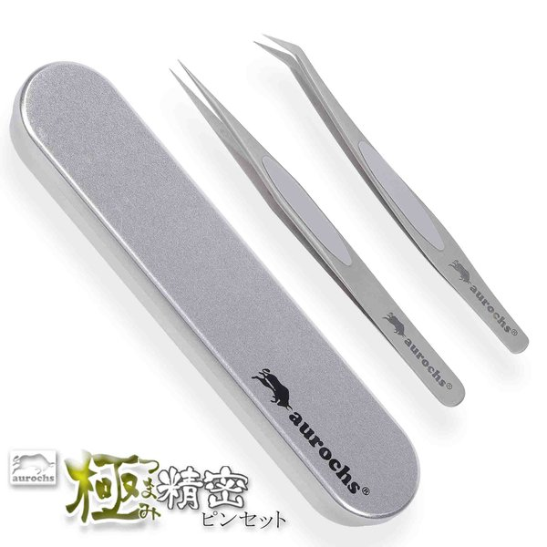

【2026年・プラモデル工具10選】ゴッドハンド アルティメットニッパー・ミネシマ 精密ニッパー・NT デザインナイフ・オルファ カッターマットA2・Corecio ヤスリ3種・PROFIX 充電式エアブラシ・MORADIA 塗装ブース・HYPE GUARD フィギュアケース・タミヤ プラセメント・aurochs ピンセットを実売価格で比較
プラモデルは、工具で仕上がりがはっきり変わります。同じキットでも、ニッパーとヤスリが違うだけで切り口の白化が残るか消えるかが決まります。
選ぶ軸は3つです。まず切る。ニッパーは刃の薄さで切り口が変わり、ゲートを切る用と仕上げ用を分けると作業が短くなります。次に整える。ヤスリとデザインナイフで切り口を均し、塗装するなら塗料の飛沫を吸うブースが要ります。最後に飾る。作ったあとのホコリと紫外線は、ケースで防ぐのがいちばん確実です。
本記事では、楽天市場で人気・高評価のプラモデル・模型製作工具10選を、実売価格とレビュー評価つきで写真付き紹介します。
- おすすめ10選 スペック・特徴比較表
- BEST 1｜ゴッドハンド アルティメットニッパー GH-SPN-120
- BEST 2｜ミネシマ 精密ニッパー 120mm
- BEST 3｜エヌティー デザインナイフ D-401P
- BEST 4｜オルファ カッターマット A2 159B
- BEST 5｜Corecio プラモ専用 3種のヤスリ セット
- BEST 6｜PROFIX TR-02 PRO 充電式エアブラシ コンプレッサーセット
- BEST 7｜MORADIA 塗装ブース 静音 ダブルファン 折りたたみ
- BEST 8｜HYPE GUARD フィギュアケース UVカット99.3% 台座・背面ミラー
- BEST 9｜タミヤ プラセメント 角ビン 87003
- BEST 10｜aurochs 極ツマミ 精密ピンセット 2本セット
- 【読者負担0円】買わなくても得する無料サービス
- まとめ：プラモデル工具・ケース10選の選び方
| 順位 | 商品名 | ブランド | 最大の特徴・おすすめ理由 | 総合評価 |
|---|---|---|---|---|
| BEST 1 | ゴッドハンド アルティメットニッパー GH-SPN-120 | ゴッドハンド（GodHand） | 切り口が白化しにくい | 4.78 |
| BEST 2 | ミネシマ 精密ニッパー 120mm | ミネシマ（MINESHIMA） | 刃先が細く小さいパーツを切れる | 4.76 |
| BEST 3 | エヌティー デザインナイフ D-401P | NT（エヌティー） | 刃の向きを左右に付け替えられる | 4.78 |
| BEST 4 | オルファ カッターマット A2 159B | オルファ（OLFA） | A2の広さで作業がはみ出さない | 4.80 |
| BEST 5 | Corecio プラモ専用 3種のヤスリ セット | Corecio | 粗さの違う3種で仕上げまで揃う | 4.70 |
| BEST 6 | PROFIX TR-02 PRO 充電式エアブラシ コンプレッサーセット | PROFIX | ホース不要で取り回しが楽 | 4.62 |
| BEST 7 | MORADIA 塗装ブース 静音 ダブルファン 折りたたみ | MORADIA | 折りたたんで収納できる | 4.91 |
| BEST 8 | HYPE GUARD フィギュアケース UVカット99.3% 台座・背面ミラー | HYPE GUARD | UVカット99.3％で色あせを防ぐ | 4.65 |
| BEST 9 | タミヤ プラセメント 角ビン 87003 | タミヤ（TAMIYA） | ハケ付きで塗りやすい | 5.00 |
| BEST 10 | aurochs 極ツマミ 精密ピンセット 2本セット | aurochs | 直と先曲がりの2本を使い分けられる | 4.93 |
ゴッドハンド アルティメットニッパー GH-SPN-120

ゴッドハンドの片刃ニッパーです。刃が薄く、ランナーから切り離したときの切り口が白くならないのが特徴で、ゲート処理のやすりがけを短くできます。刃を保護するキャップが付いています。楽天市場での実売価格は約6,490円（2026年11月時点）。
- 切り口が白化しにくい
- 薄刃で狭い場所にも入る
- 刃先キャップ付きで保管できる
- 薄刃なので、硬い樹脂や金属には使えない
ミネシマ 精密ニッパー 120mm

ミネシマの精密ニッパーです。刃先が細く、120mmの短い全長で手元が安定します。ゲートを切り離す最初の1本に向いていて、切ったあとの処理はヤスリで整える前提の道具です。楽天市場での実売価格は約1,650円（2026年11月時点）。
- 刃先が細く小さいパーツを切れる
- 短い全長で手元が安定する
- 価格が手ごろで入門用に向く
- レビューが29件と少なく、切れ味の好みは実際に使って確かめたい
エヌティー デザインナイフ D-401P

NTのデザインナイフです。軸が細く、ペンを持つように握って刃先を細かく動かせます。刃の向きを左右どちらにも付け替えられるので、利き手を選びません。パステルカラーの5色から選べます。楽天市場での実売価格は約440円（2026年11月時点）。
- 刃の向きを左右に付け替えられる
- 細軸で細かい作業がしやすい
- 替刃が市販されていて補充できる
- 軸が細いぶん、力を入れて切ると握りが痛くなる
オルファ カッターマット A2 159B

オルファのカッターマットA2サイズです。450×620mmの広さがあり、ランナーを切る作業やデカールを切る作業がはみ出しません。両面に方眼が入っていて、まっすぐ切りたいときに目安になります。楽天市場での実売価格は約2,640円（2026年11月時点）。
- A2の広さで作業がはみ出さない
- 両面の方眼でまっすぐ切れる
- 刃あたりが柔らかく刃を傷めにくい
- A2は大きいので、置き場所を決めてから買う
Corecio プラモ専用 3種のヤスリ セット

プラモデルのゲート処理用に3種類のヤスリをまとめたセットです。面をならすガラスヤスリと、曲面に沿わせられるスポンジヤスリが入っていて、切り口の粗さに合わせて使い分けられます。楽天市場での実売価格は約1,699円（2026年11月時点）。
- 粗さの違う3種で仕上げまで揃う
- スポンジタイプは曲面に沿う
- 水研ぎにも使える
- 番手の表記が分かりにくいので、袋にメモして保管するとよい
PROFIX TR-02 PRO 充電式エアブラシ コンプレッサーセット

レイウッドのPROFIXシリーズの充電式エアブラシです。コンプレッサーが手元の筒に内蔵されていて、ホースをつながずに塗装できます。電池で動くので、ベランダや屋外でも使えます。楽天市場での実売価格は約9,900円（2026年11月時点）。
- ホース不要で取り回しが楽
- 充電式で場所を選ばない
- ダブルアクションで塗料量を調整できる
- 連続使用はバッテリー切れとの勝負になり、予備が欲しくなる
MORADIA 塗装ブース 静音 ダブルファン 折りたたみ

MORADIAの卓上塗装ブースです。二重のファンで塗料のミストを吸い込み、折りたたんで収納できます。LEDライトが付いていて、手元を照らしながら塗装できます。楽天市場での実売価格は約19,800円（2026年11月時点）。
- 折りたたんで収納できる
- LEDライト付きで手元が見える
- 二重ファンでミストを吸い込む
- レビューが11件と少なく、吸引の強さは実際に使って確かめたい
HYPE GUARD フィギュアケース UVカット99.3% 台座・背面ミラー

コレクターの意見を取り入れて作られたフィギュアケースです。UVカット率99.3％で、日光で色あせしにくい素材を使っています。背面がミラーになっていて、後ろ側の造型まで見えます。楽天市場での実売価格は約3,680円（2026年11月時点）。
- UVカット99.3％で色あせを防ぐ
- 背面ミラーで後ろ姿も見える
- 積み重ねて飾れる
- サイズが合わないフィギュアは入らないので、高さを測ってから買う
タミヤ プラセメント 角ビン 87003

タミヤのプラモデル用接着剤です。角ビンの容器にハケが付いていて、ふたを開けてそのままパーツの合わせ目に塗れます。プラスチックを溶かして接着するタイプで、あとから位置を直せます。楽天市場での実売価格は約314円（2026年11月時点）。
- ハケ付きで塗りやすい
- 溶かして接着するので位置を直せる
- 定番品で入手しやすい
- レビューが5件と少なく、においと乾き具合は好みが分かれる
aurochs 極ツマミ 精密ピンセット 2本セット

aurochsの精密ピンセット2本セットです。先がまっすぐのタイプと、先が曲がったタイプが入っていて、デカールを貼るときに指が入らない場所でもつまめます。ケース付きです。楽天市場での実売価格は約1,510円（2026年11月時点）。
- 直と先曲がりの2本を使い分けられる
- 細かいデカールをつまめる
- ケース付きで保管しやすい
- レビューが14件と少なく、先端の精度は個体差を見ておきたい
この記事の商品を買う前に、まずは無料で得する選択肢をチェック。どれも登録・利用は0円で、無料期間中に解約すれば料金はかかりません。読みたい雑誌がある人、ポイントを貯めたい人、アンケートなら気軽という人、それぞれに合うものを選べます。
初回31日無料・無料期間中に解約すれば0円 → 楽天ポイントモール｜登録無料で毎日ポイ活
買い物なしでもポイントが貯まる無料サービス → 楽天インサイト｜アンケートに答えてポイント
登録無料・すきま時間のアンケートで貯まる → 楽天カード｜年会費永年無料
新規発行・年会費ずっと0円 →
4つのサービスの違いと使い分けは「出費0円で得する！買わずにポイントが貯まる無料サービス厳選4選」でまとめています。
💡 まとめ：プラモデル工具・ケース10選の選び方
プラモデル工具は、切る・整える・飾るの3段階で揃えると迷いません。切る道具はゴッドハンドのアルティメットニッパーが本命、入門用の2本目にミネシマの精密ニッパー。整える道具はNTのデザインナイフ、オルファのカッターマットA2、Corecioのヤスリ3種、細かいパーツはaurochsの精密ピンセット。塗装に進むならPROFIXの充電式エアブラシとMORADIAの塗装ブース、パーツの合わせにはタミヤのプラセメント。作ったあとはHYPE GUARDのフィギュアケースに入れると、ホコリと紫外線から守れます。まずニッパーとヤスリを買い、塗装とケースは作る数が増えてから足すのが、無駄の少ない揃え方です。
楽天市場では「5と0のつく日」や「お買い物マラソン」などのキャンペーンに合わせて購入すると、ポイント還元が最大化してお得に手に入ります。ぜひチェックしてみてくださいね。